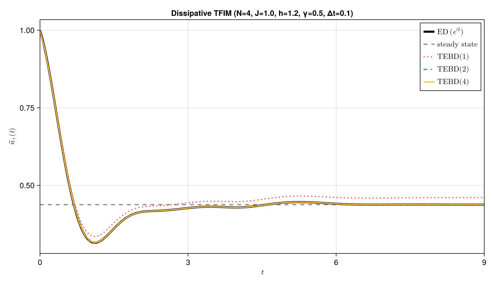
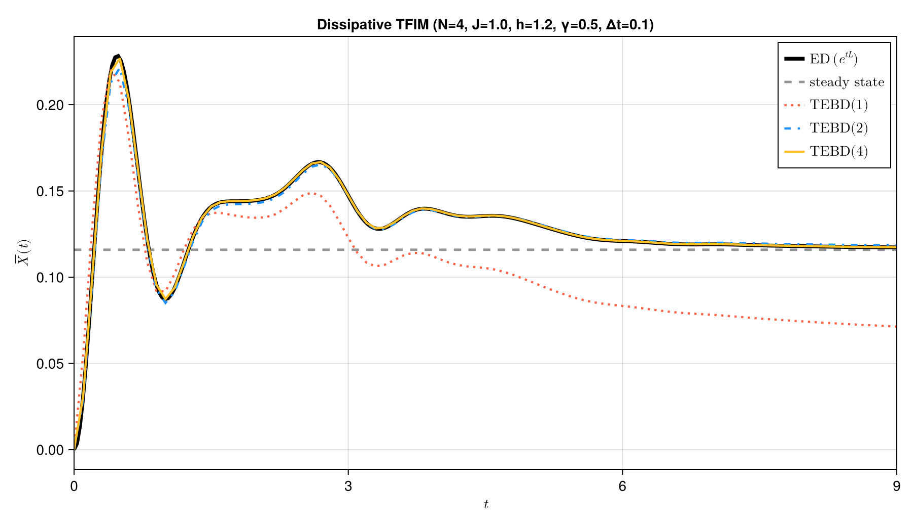

Dissipative spin-chain dynamics
A closed transverse-field Ising model describes coherent spin rotation and correlated many-body motion. Real spin platforms also exchange energy with their surroundings, so coherent dynamics is progressively damped and the system relaxes toward a state selected by both the Hamiltonian and the environment.
Adding local amplitude damping gives a standard open-system benchmark. The dissipative transverse-field Ising chain is a paradigmatic model of correlated open-system dynamics, widely used to study relaxation, decoherence, and nonequilibrium steady states. Here it also provides a compact example of the ProcessTensors.jl workflow:
- define a physical Hamiltonian as an
OpSum; - specify local Lindblad channels as
jump_ops; - vectorize the initial density matrix;
- evolve it directly with Liouville-space
tebd.
Advanced figures comparing first-, second-, and fourth-order TEBD against dense $e^{t\mathcal L}$ evolution are generated by scripts/tebd_tfim_dissipative.jl. This page keeps one representative second-order run visible and executable.
Model and physical scales
We use an open transverse-field Ising chain,
\[H = -J\sum_{j=1}^{N-1} Z_jZ_{j+1} -h\sum_{j=1}^{N} X_j ,\]
together with a local loss channel at each site,
\[L_j=S_j^-, \qquad j=1,\ldots,N,\]
so the density matrix evolves as
\[\frac{d\rho}{dt} = -i[H,\rho] + \gamma\sum_{j=1}^{N}\mathcal{D}[S_j^-]\rho , \qquad \mathcal{D}[L]\rho = L\rho L^\dagger -\frac{1}{2}\{L^\dagger L,\rho\}.\]
The Ising term correlates neighboring spins, the transverse field rotates them away from the $Z$ axis, and $S_j^-$ transfers local Up population to Dn. The rates $J$, $h$, and $\gamma$ therefore set competing coherent, interaction, and relaxation timescales.
We start from the fully polarized state $|\mathrm{Up}\cdots\mathrm{Up}\rangle$ and monitor two complementary observables:
\[\bar n_\uparrow(t) = \frac{1}{N}\sum_{j=1}^{N} \left\langle\frac{I+Z_j}{2}\right\rangle_t , \qquad \overline X(t) = \frac{1}{N}\sum_{j=1}^{N}\langle X_j\rangle_t .\]
The excited-spin density $\bar n_\uparrow$ tracks population relaxation under amplitude damping. The transverse magnetization $\overline X$ exposes the coherent response generated by the transverse field.
Parameters and operators
using Printf
using ITensors
using ITensors.Ops: Trotter
using ProcessTensors
const N = 6
const J = 1.0
const transverse_field = 1.2
const decay_rate = 0.5
const dt = 0.1
const final_time = 4.0
const maxdim = 96
const cutoff = 1e-10
physical_sites = siteinds("S=1/2", N)
liouville_sites = liouv_sites(physical_sites)
hamiltonian = let H = OpSum()
for j in 1:(N - 1)
H += -J, "Z", j, "Z", j + 1
end
for j in 1:N
H += -transverse_field, "X", j
end
H
endsum(
-1.0 Z(1,) Z(2,)
-1.0 Z(2,) Z(3,)
-1.0 Z(3,) Z(4,)
-1.0 Z(4,) Z(5,)
-1.0 Z(5,) Z(6,)
-1.2 X(1,)
-1.2 X(2,)
-1.2 X(3,)
-1.2 X(4,)
-1.2 X(5,)
-1.2 X(6,)
)A tuple (γ, "S-", j) contributes $\gamma\mathcal D[S_j^-]$ to the Liouvillian. The first entry is the dissipative rate, the second entry is the jump operator responsible for the dissipation, and the third is the site index where this operator sits.
jump_operators = [(decay_rate, "S-", j) for j in 1:N]
initial_state = MPS(physical_sites, fill("Up", N))
initial_density = to_dm(initial_state)
initial_density_liouville =
to_liouville(initial_density; sites=liouville_sites)
mean_x_operator = let observable = OpSum()
for j in 1:N
observable += 1 / N, "X", j
end
observable
endsum(
0.16666666666666666 X(1,)
0.16666666666666666 X(2,)
0.16666666666666666 X(3,)
0.16666666666666666 X(4,)
0.16666666666666666 X(5,)
0.16666666666666666 X(6,)
)Now we define the observables we wish to track in the Liouville space. Local projector onto Up is $(I + Z)/2$, and the local transverse magnetization is $X/N$.
excited_density_operator = let observable = OpSum()
for j in 1:N
observable += 0.5 / N, "Id", j
observable += 0.5 / N, "Z", j
end
observable
end
mean_x_liouville = to_liouville(
MPO(mean_x_operator, physical_sites);
sites=liouville_sites,
)
excited_density_liouville = to_liouville(
MPO(excited_density_operator, physical_sites);
sites=liouville_sites,
)
@assert isapprox(real(tr(initial_density)), 1.0; atol=1e-12)Liouville-space TEBD
Vectorization turns the master equation into
\[\frac{d}{dt}|\rho(t)\rangle\rangle = \mathcal L|\rho(t)\rangle\rangle .\]
tebd constructs local Liouville-space gates internally from the physical Hamiltonian and the jump tuples. A second-order Suzuki–Trotter decomposition approximates $e^{\mathcal L\Delta t}$; because the generator already contains the Hamiltonian factor $-i$, the evolution time passed to Liouville TEBD is the real interval dt.
nsteps = round(Int, final_time / dt)
@assert isapprox(nsteps * dt, final_time; atol=100eps(Float64))
times = collect(range(0.0; step=dt, length=nsteps + 1))
trajectory = let
density = copy(initial_density_liouville)
mean_x = Float64[]
excited_density = Float64[]
trace_errors = Float64[]
bond_dimensions = Int[]
for step in eachindex(times)
trace_value = tr(to_hilbert(density))
push!(mean_x, real(inner(mean_x_liouville, density) / trace_value))
push!(
excited_density,
real(inner(excited_density_liouville, density) / trace_value),
)
push!(trace_errors, abs(trace_value - 1))
push!(bond_dimensions, maxlinkdim(density))
step == length(times) && continue
density = tebd(
density,
hamiltonian,
dt,
dt;
jump_ops=jump_operators,
alg=Trotter{2}(),
maxdim=maxdim,
cutoff=cutoff,
progress=false,
)
end
(
mean_x=mean_x,
excited_density=excited_density,
trace_errors=trace_errors,
bond_dimensions=bond_dimensions,
)
end
max_trace_error = maximum(trajectory.trace_errors)
max_bond_dimension = maximum(trajectory.bond_dimensions)
@assert all(isfinite, trajectory.mean_x)
@assert all(isfinite, trajectory.excited_density)
@assert all(value -> -1 - 1e-8 ≤ value ≤ 1 + 1e-8, trajectory.mean_x)
@assert all(value -> -1e-8 ≤ value ≤ 1 + 1e-8, trajectory.excited_density)
@assert max_trace_error < 1e-2
println("Dissipative transverse-field Ising chain")
@printf(" N=%d, J=%.2f, h=%.2f, γ=%.2f\n", N, J, transverse_field, decay_rate)
@printf(
" final ⟨X̄⟩ = %.6f, final n̄_↑ = %.6f\n",
trajectory.mean_x[end],
trajectory.excited_density[end],
)
@printf(" max trace error = %.3e, max bond dim = %d\n", max_trace_error, max_bond_dimension)Dissipative transverse-field Ising chain
N=6, J=1.00, h=1.20, γ=0.50
final ⟨X̄⟩ = 0.157441, final n̄_↑ = 0.423257
max trace error = 1.109e-03, max bond dim = 64
Relaxation and numerical interpretation
The initial all-Up state has unit excited-spin density. With time, local $S^-$ jump operators remove that population, thus $\bar n_\uparrow(t)$ falls toward a stationary value. The transverse field creates a non-zero coherent response, that leads to transient oscillations in the transverse magnetization. These oscillations are damped as the environment erases coherent spin motion by decaying the population, while the Ising coupling makes the response collective rather than a set of independent one-spin decays.
As a consequence, the late-time values are not ground-state observables of $H$. They describe a nonequilibrium stationary response determined by coherent rotation, spin–spin interactions, and local loss. The dense curves in the figures below validate that interpretation and show how the TEBD approximation improves as the Trotter order increases at fixed $\Delta t$.


Sources of numerical error
This calculation has three principal numerical approximations:
- Trotter error: local coherent and dissipative Liouvillian terms do not generally commute. At fixed $\Delta t$, raising the Suzuki–Trotter order from $1$ to $2$ to $4$ systematically reduces that splitting error.
- Tensor-network truncation: two-site gates can increase the Liouville-MPS bond dimension.
cutoffandmaxdimcontrol the discarded information. - Finite simulation window:
final_timemay be too short to establish that the stationary regime has been reached.
Trace drift is a useful inexpensive diagnostic, but it does not by itself prove positivity or convergence. The full script compares Trotter orders $1$, $2$, and $4$ at $\Delta t = 0.1$ with dense evolution on a smaller chain.
- Local amplitude damping is specified by adding one local
(γ, "S-", j)jump tuple for every spin; the physical Hamiltonian remains an ordinary Hilbert-spaceOpSum. tebdconverts this Hamiltonian-and-jump description into local Liouville-space propagators and evolves the vectorised density matrix directly.- The excitation density tracks population removed by the environment, while $\overline X(t)$ tracks coherent spin dynamics damped by the same loss channels.
- The stationary values are nonequilibrium observables determined jointly by the Hamiltonian and dissipators; they need not coincide with ground-state expectation values of
H. - At a fixed timestep, increasing the Trotter order systematically reduces the operator-splitting error in this example, as confirmed by comparison with dense Liouvillian evolution.
- Trotter order and timestep are complementary accuracy controls: higher-order formulas perform more gate applications per step, whereas a smaller
dtincreases the number of steps.